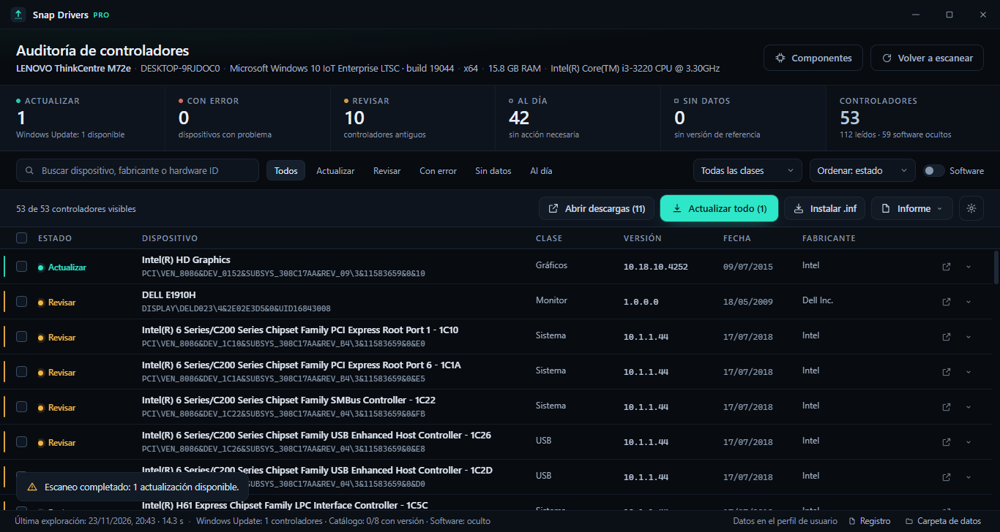

Escaneo completo del equipo
Controladores, versiones, fechas, firma, INF, hardware IDs y estado PnP. También detecta dispositivos con error aunque no tengan controlador.
Snap Drivers Pro escanea todos los controladores de tu PC, te dice cuáles necesitan actualización y descarga el paquete que Microsoft publica para ese hardware exacto. Un solo permiso para instalar todo.

Controladores, versiones, fechas, firma, INF, hardware IDs y estado PnP. También detecta dispositivos con error aunque no tengan controlador.
Consulta Windows Update para tu equipo y cruza el resultado con un catálogo local editable. Nunca inventa un «al día».
Del hardware ID al CAB firmado que Microsoft publica en su catálogo, con progreso y sin espejos de terceros.
Descarga y extrae toda la cola y aplica los paquetes con una única confirmación. Sin ventanas de consola.
Chipset, audio y touchpad → fabricante del equipo. GPU, red y Bluetooth → fabricante del chip. Con marca, modelo y número de serie.
Cada escaneo, descarga e instalación con su código de resultado, exportable a TXT o JSON.
Portátiles y torres de cualquier marca, incluidos chipsets, Wi-Fi, audio, almacenamiento y periféricos. Si un dispositivo no está en la tabla, siempre queda la búsqueda por hardware ID en el catálogo oficial.
Instalador firmado por ti mismo, sin tiendas ni instaladores de terceros. También hay versión portable.
De Windows Update y del Catálogo de Microsoft Update, con la URL del paquete que Microsoft devuelve para tu hardware ID. Nada de espejos ni repositorios de terceros.
No. La app no tiene servidor propio: todo se guarda en su carpeta junto al ejecutable (settings.json, instalados.json, Registros/).
Instalar un controlador requiere escribir en el almacén de Windows. Se eleva solo esa operación, una vez por lote, y el resto del análisis es de solo lectura.
Sí. Al arrancar comprueba las releases de este repositorio; si hay una versión nueva te avisa y la instala con un clic.
El ejecutable no está firmado con un certificado comercial, así que la primera vez puede pedir confirmación. Pulsa «Más información → Ejecutar de todas formas».